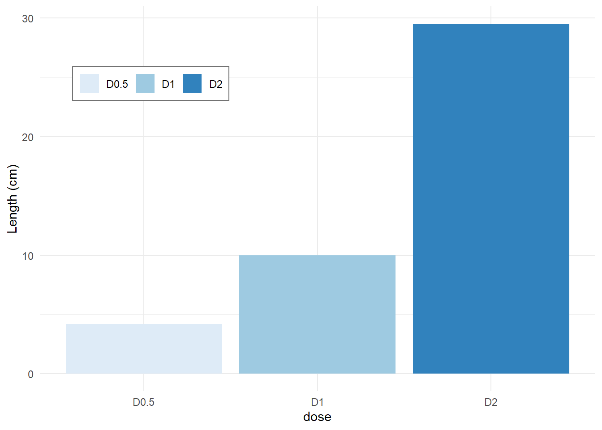
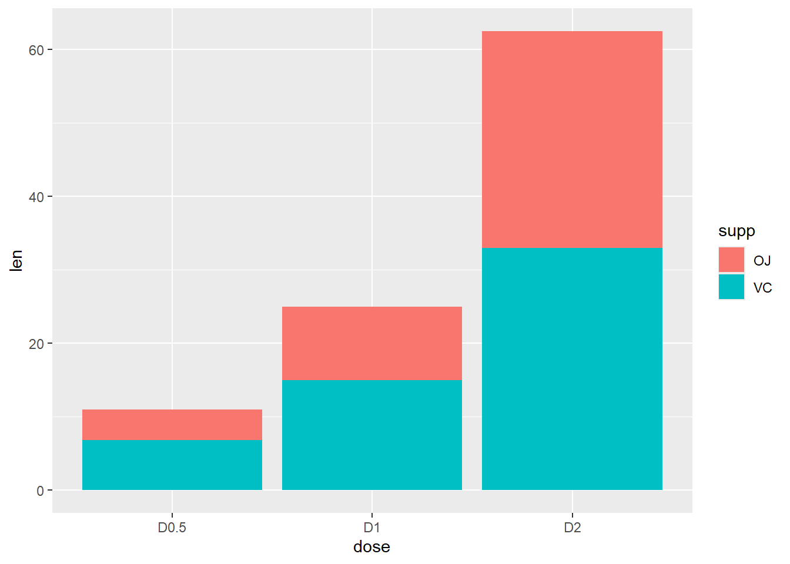

Code
df <-
data.frame(
dose = c("D0.5", "D1", "D2"),
len = c(4.2, 10, 29.5))
df dose len
1 D0.5 4.2
2 D1 10.0
3 D2 29.5To start we create a fictitious data
df <-
data.frame(
dose = c("D0.5", "D1", "D2"),
len = c(4.2, 10, 29.5))
df dose len
1 D0.5 4.2
2 D1 10.0
3 D2 29.5Next, we make the basic Barplot
p <-
df %>%
ggplot(aes(x = dose, y = len))
p + geom_bar(stat="identity")Next we flip the barplot horizontal, change the size of the bar width and change the theme
p +
geom_bar(
stat = "identity",
width = 0.8,
color = "blue",
fill = "grey90") +
coord_flip() +
theme_bw()Next we limit the observations to just two
p +
geom_bar(
stat = "identity",
width = 0.8,
color = "black",
fill = "steelblue") +
scale_x_discrete(limits=c("D0.5", "D2"))Warning: Removed 1 row containing missing values or values outside the scale range
(`geom_bar()`).
Next we put labels on the bars at the outside and inside
p +
geom_bar(stat="identity", fill="steelblue")+
geom_text(
aes(label=len),
vjust=-0.5,
size=4,
col = "black")+
theme_minimal()# Change barplot line colors by groups
p <-
ggplot(df, aes(x = dose, y = len, color = dose)) +
geom_bar(stat = "identity", fill = "white") +
geom_text(aes(label=len), vjust=1.5, size=5, col = "red")
pp + scale_color_manual(values=c("#999999", "#E69F00", "#56B4E9"))Use brewer color palettes
p + scale_color_brewer(palette="Dark2")p + scale_color_grey() + theme_classic()Change barplot fill colors by groups
#
p <-
ggplot(df, aes(x=dose, y=len, fill=dose)) +
geom_bar(stat="identity")+theme_minimal()
pUse custom color palettes
p + scale_fill_manual(values=c("#999999", "#E69F00", "#56B4E9"))p +
scale_fill_brewer(palette="Dark2")Use grey scale
p + scale_fill_grey()ggplot(df, aes(x=dose, y=len, fill=dose))+
geom_bar(stat="identity", color="black")+
scale_fill_manual(values=c("#999999", "#E69F00", "#56B4E9"))+
theme_minimal()Change bar fill colors to blues
p + scale_fill_brewer(palette="Blues")
p + theme(legend.position="top") p + theme(legend.position="bottom") p + theme(legend.position="none")
Change position of bars
p +
scale_x_discrete(limits=c("D2", "D0.5", "D1"))dat <- foreign::read.dta("C:/dataset/bea_organ_damage_28122013.dta")
BC <-
dat %>%
select(q2idtype, q3sex) %>%
na.omit() %>%
group_by(q2idtype, q3sex) %>%
summarize(Freq = n()) %>%
ggplot(aes(x=q2idtype, y=Freq, fill=q3sex))`summarise()` has grouped output by 'q2idtype'. You can override using the
`.groups` argument.Next we draw the barplot using the economist theme from the ggthemes package
BC +
geom_bar(stat="identity", position= position_dodge()) +
geom_text(aes(label=Freq), vjust=1.6, color="black",
size=4, position = position_dodge(0.9)) +
scale_fill_brewer(palette="Reds") +
labs(title="My Barplot", x="Case or Control", y="Frequency") +
scale_color_discrete(name="Sex") +
ggthemes::theme_stata()
Next we plot a baroplot with error bars. To do that we first we form the ggplot object that we call BC.
BC <-
dat %>%
select(Type = q2idtype, Sex = q3sex, q12weight) %>%
na.omit() %>%
group_by(Type, Sex) %>%
summarize(Mean.wgt = mean(q12weight), SD.wgt = sd(q12weight)) %>%
ggplot(aes(x=Type, y=Mean.wgt, fill=Sex))`summarise()` has grouped output by 'Type'. You can override using the
`.groups` argument.And then plot the graph
BC +
geom_bar(stat="identity", position=position_dodge()) +
geom_errorbar(
aes(ymin = Mean.wgt-SD.wgt, ymax = Mean.wgt+SD.wgt),
width=.2,
size=0.,
position=position_dodge(.9)) +
labs(
title="Mean weight with error bars",
x="Case or Control",
y="Mean(kgs)") +
scale_fill_brewer(palette="Paired") +
ggthemes::theme_stata()Warning: Using `size` aesthetic for lines was deprecated in ggplot2 3.4.0.
ℹ Please use `linewidth` instead.df2 <- data.frame(supp=rep(c("VC", "OJ"), each=3),
dose=rep(c("D0.5", "D1", "D2"),2),
len=c(6.8, 15, 33, 4.2, 10, 29.5))
head(df2)TRUE supp dose len
TRUE 1 VC D0.5 6.8
TRUE 2 VC D1 15.0
TRUE 3 VC D2 33.0
TRUE 4 OJ D0.5 4.2
TRUE 5 OJ D1 10.0
TRUE 6 OJ D2 29.5df2 %>%
ggplot(aes(x=dose, y=len, fill=supp)) +
geom_bar(stat="identity")
df2 %>%
ggplot(aes(x=dose, y=len, fill=supp)) +
geom_bar(stat="identity", position=position_dodge())Change color manually
p <-
ggplot(data=df2, aes(x=dose, y=len, fill=supp)) +
geom_bar(stat="identity", color="black", position=position_dodge()) +
scale_fill_manual(values=c('#999999','#E69F00')) +
theme_minimal()
p
Create some data
df_sorted <-
tibble(supp = factor(rep(c("VC", "OJ"), each=3)),
dose = rep(c("0.5", "1", "2"),2),
len = c(6.8, 15, 33, 4.2, 10, 29.5)) %>%
arrange(dose, supp) %>%
group_by(dose) %>%
mutate(label_ypos=cumsum(len))
df_sorted# A tibble: 6 × 4
# Groups: dose [3]
supp dose len label_ypos
<fct> <chr> <dbl> <dbl>
1 OJ 0.5 4.2 4.2
2 VC 0.5 6.8 11
3 OJ 1 10 10
4 VC 1 15 25
5 OJ 2 29.5 29.5
6 VC 2 33 62.5df_sorted %>%
ggplot(aes(x=dose, y=len, fill=supp)) +
geom_bar(stat="identity")+
geom_text(aes(y=label_ypos, label=len), vjust=1.6,
color="white", size=3.5)+
scale_fill_brewer(palette="Paired")+
theme_minimal()Plotting barplot with x-axis treated as continuous variable
#
df_sorted %>%
mutate(dose = as.numeric(dose)) %>%
ggplot(aes(x=dose, y=len, fill=supp)) +
geom_bar(stat="identity", position=position_dodge())+
scale_fill_brewer(palette="Paired")+
theme_minimal()# Axis treated as discrete variable
df_sorted %>%
mutate(dose = as.factor(dose)) %>%
ggplot(aes(x=dose, y=len, fill=supp)) +
geom_bar(stat="identity", position=position_dodge())+
scale_fill_brewer(palette="Paired")+
theme_minimal()ToothGrowth %>%
mutate(dose = as.factor(dose)) %>%
group_by(supp, dose) %>%
summarise(sd = sd(len), len = mean(len), .groups = "drop") %>%
ggplot(aes(x=dose, y=len, fill=supp)) +
geom_bar(stat="identity", position=position_dodge()) +
geom_errorbar(aes(ymin=len-sd, ymax=len+sd), width=.2,
position=position_dodge(.9)) +
labs(title="Plot of length per dose", x="Dose (mg)", y = "Length")+
scale_fill_brewer(palette="Paired") +
theme_minimal()babies <-
dget("babies_clean") %>%
select(apgar5cat, died)
babies %>%
ggplot(aes(x = apgar5cat, fill = apgar5cat)) +
geom_bar(stat = 'count') +
scale_fill_grey(
name = "APGAR Category",
label = c("LOW", "MEDIUM", "HIGH"))+
theme_bw()Graph of binomial confiedence intervals
tibble(
alg = c(
"D farina", "D pteronyssinus", "American Cockroach",
"Dog","Alternaria","Rye grass"),
n = c(125, 118, 62, 3, 3, 0)) %>%
mutate(N = rep(161, 6)) %>%
mutate(xx = epiDisplay::ci.binomial(n, N)) %>%
unnest(xx) %>%
ggplot(
aes(
x = alg, y = probability, color = alg,
ymin = exact.lower95ci, ymax = exact.upper95ci)) +
geom_col(
fill = "steelblue",
color = "steelblue", alpha = 0.4) +
geom_errorbar(color = "steelblue", width = 0.15)+
labs(
y = "Percentage (%)",
x = NULL,
caption = "Asthma study (2023)")+
theme_bw()+
scale_y_continuous(br = seq(0, 1, 0.2), labels = seq(0, 100, 20))+
theme(
axis.text.x = element_text(
angle = 90, hjust = 1, vjust = 0.05,
face = "italic"))